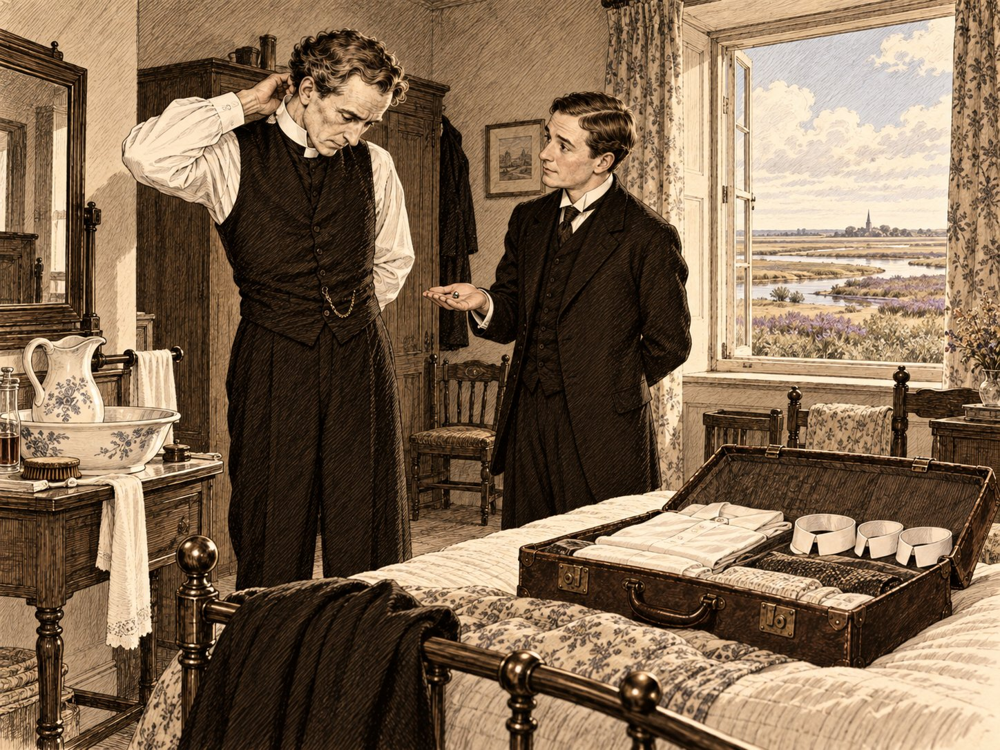

Невидимый

Железную дорогу, которая тянется из южного Линкольншира к норфолкскому морю, в расписаниях называли Объединённой дорогой Мидленд энд Грейт Норзерн, а в жизни — по первым буквам английского названия: «Путаница, и никуда не едем». Преподобный Эмброуз Морс, викарий прихода Сент-Гатлак на краю Фенов, осушенной болотной равнины к востоку от Стамфорда, считал это прозвище несправедливым. Поезд ехал. Он только ехал так, как ездят в гости деревенские люди: останавливался у каждого знакомого и подолгу стоял на разъездах, пропуская встречный, а встречный тоже стоял и пыхтел, как сосед у калитки, который ни за что не уйдёт первым.
В ту субботу, первую в августе 1914 года, вагоны были набиты так, что викарию, человеку длинному и худому, пришлось сложиться, как складывают плотницкий метр. В понедельник наступали банковские каникулы. Сорок с лишним лет назад парламент подарил банкам летний выходной, а взяла его себе вся страна, и теперь пол-Англии ехало к морю. Напротив викария сидело семейство из Питерборо с корзиной, из которой торчали горлышки бутылок и ручка крокетного молотка. Дети по очереди спрашивали, скоро ли Кромер, отец по очереди отвечал, что скоро, и при этом читал газету. Чем дальше он читал, тем реже отвечал.
Викарий видел эту газету через проход. Накануне в Лондоне закрылась фондовая биржа, чего не бывало с тех пор, как она существует. В бирже викарий понимал мало, зато кое-что понимал в дверях. Дверь закрывают в двух случаях: когда все ушли и когда боятся тех, кто сейчас придёт. В пятницу к бирже пришли все.
Ехал он в Сэлтинг-холл, к сэру Хамфри Девереллу, и ехал по долгу, который давно стал удовольствием. Сэр Хамфри был патроном его прихода. Тому, кто не знаком с английскими церковными обычаями, нужно объяснить, что приход в Англии нередко принадлежит не только Богу и епископу, но и какому-нибудь частному лицу. Тот, чьи предки построили церковь или купили это право, может, когда место освободится, назвать епископу нового священника. Почти двадцать лет назад сэр Хамфри назвал Эмброуза Морса. Выбрал он его так, как выбирал всё на свете, — прочитав. В оксфордском богословском журнале ему попалась статья молодого филолога о том, как блаженный Августин считал свои грехи. Банкир решил, что человек, который так хорошо считает грехи, сумеет сосчитать и приходские деньги, и ошибся только наполовину. С тех пор он каждое лето звал «своего» викария на несколько дней в Норфолк, и каждое лето они спорили о том, можно ли спасти душу, не сводя баланса.
На станции Холт викария ждал автомобиль сэра Хамфри, большой и тёмно-зелёный, с шофёром, который вёл его так бережно, как ведут под руку старую даму. Дорога шла к морю между кремнёвыми стенами. Камня в Норфолке почти нет, и строят здесь из кремня, который выпахивают в полях; расколотые пополам желваки блестят в стенах, как мокрые устрицы. Потом стены кончились, и открылись солончаки — плоская земля в протоках, которую дважды в сутки заливает море, лиловая в эту пору от морской лаванды. Здесь её называют saltings, и усадьба получила имя по ней. Викарий смотрел на солончаки с нежностью. Это были те же Фены, только солёные, и небо над ними было то же самое, огромное, на три четверти всякого вида.
Сэлтинг-холл стоял на пологом холме, спиной к лесу и лицом к морю. Это был длинный кирпичный дом времён королевы Анны, к которому каждое поколение пристраивало по крылу, так что он походил на большую семью, где у каждого свой характер и общее только лицо. Ниже, в лощине, стояла церковь с круглой башней. Таких церквей в Норфолке больше, чем во всей остальной Англии; говорят, оттого, что здесь не из чего было выложить углы квадратной башни, а кремень хорошо ложится по кругу.
Встретил викария дворецкий Пратт, человек тяжёлый и торжественный, как церковный аналой. Он извинился, что хозяин не может выйти сам: сэр Хамфри с утра в телефонной комнате. Извинился он и за то, что гостю не дадут лакея. Из четырёх лакеев в доме двое служили когда-то во флоте и числились в резерве; со вчерашнего дня они ждали повесток, и толку от них, как выразился Пратт, было как от двух чемоданов, которые ещё не уехали. Лорд Тэллинг любезно предоставил гостю своего человека.
У викария никогда в жизни не было камердинера, и он немного испугался.
Камердинер лорда Тэллинга оказался молодым, под тридцать, обычного роста, в тёмном костюме, который сидел на нём, как обои сидят на стене: правильно и незаметно. Лицо у него было из тех, что видишь каждый день и не можешь описать, отвернувшись. Он поклонился, открыл чемодан и стал раскладывать вещи с такой быстротой, словно они сами знали, куда им лечь.
— Воротничков у вас три, сэр, — сказал он, не поднимая головы, — а задняя запонка одна, и та гнутая.
Викарий покраснел, как школьник. Пасторский воротничок, высокий и белый, застёгивается сзади на маленькую запонку, и эта запонка была проклятием его жизни. Она закатывалась под комод, проваливалась в щели между половицами, пряталась в складках одеяла. Агнес говорила, что в раю ему выдадут воротничок без запонки и он не поверит, что это рай.
— Откуда вы знаете, что она гнутая? — спросил он.
— Она так лежит, сэр.
Молодой человек достал из кармана плоскую коробочку, вынул из неё запонку и положил на туалетный столик.
— Это запасная, сэр. У меня всегда есть запасные. Джентльмены теряют их в самые неподходящие минуты.
— Вы очень добры. Как вас зовут?
Он помедлил, и викарию показалось, что за весь разговор он впервые подумал, прежде чем ответить.
— Внизу меня зовут мистер Тэллинг, сэр. Так принято: приезжих слуг называют по хозяевам, чтобы не путаться.
— А наверху?
— Наверху, сэр, обычно не зовут.
Он сказал это без всякой обиды, как сказал бы, что в августе поздно темнеет. Викарий посмотрел на него внимательнее и вспомнил слова, которые не раз читал с кафедры: добрый пастырь зовёт своих овец по имени. В этом доме, выходило, некоторых овец по имени звал только Он.
Перед чаем на лужайке играли в теннис, и викарий из плетёного кресла разглядывал людей, с которыми ему предстояло прожить четыре дня. Леди Деверелл, за пятьдесят, мягкая и близорукая, вязала что-то бесконечное и при каждом ударе мяча вздрагивала, будто удар приходился по ней. Её дочь Ивлин, за двадцать, хорошенькая и решительная, играла против своего жениха и не давала ему спуску. Жених, лорд Тэллинг, лет тридцати, большой, добрый и рассеянный, играл так, будто мяч был его старым другом и он боялся его обидеть. Джеральд Деверелл, сын хозяина, за тридцать, служил офицером в территориальной йоменри — конном добровольческом полку графства. Это был грузный загорелый человек с лицом того, кто всё время кому-то должен и знает, что все об этом знают.
И был ещё Найджел Пейджет, племянник сэра Хамфри, сын его покойной сестры и младший компаньон банкирского дома «Деверелл и Кº». Найджела любили все, и он позволял себя любить с тем же лёгким изяществом, с каким брал трудные мячи. Ему было за тридцать; он был светловолос, ловок и весел, выигрывал у всех и всякий раз так огорчался за побеждённого, что тому становилось неловко за собственное огорчение. Шутил он без умолку. Когда Джеральд спросил его про биржу, он ответил, что биржа наконец ушла в отпуск, как всякий приличный человек в августе, и что он ей завидует.
Сэр Хамфри вышел к чаю поздно. Это был прямой сухой старик за шестьдесят, с лицом человека, который всю жизнь проверял чужие цифры и ни разу не нашёл ошибки в своих. Он пожал викарию руку и сказал, что рад; было видно, что он действительно рад и что ему не до радости. Шутку про биржу ему пересказали, и он не улыбнулся.
— Биржа не в отпуске, Найджел, — сказал он. — Биржа в обмороке. Это разные вещи.
Найджел засмеялся и согласился, что разные, и через минуту уже рассказывал леди Деверелл, как в Сити один почтенный маклер искал в пятницу свою шляпу и нашёл её на голове у швейцара. Леди Деверелл смеялась до слёз. Сэр Хамфри допил чай и снова ушёл в телефонную комнату.
Вечером, когда викарий одевался к обеду, человек лорда Тэллинга пришёл помочь ему с воротничком. Викарий не привык, чтобы ему помогали, и, чтобы не молчать, спросил, многих ли он одевает в этом доме.
— Его светлость, сэр, вас и мистера Пейджета. Мистер Пейджет приехал без человека. Я разобрал его чемодан. У него в футляре три жемчужные запонки для сорочки и ни одной запасной, так что я оставил ему одну на столике.
— Он вас поблагодарил?
— Нет, сэр. Думаю, он её не заметил. Запасные никто не замечает, пока они не понадобятся.
Обедали весело. Найджел рассказывал, лорд Тэллинг смеялся раньше, чем доходило до смешного, Ивлин его за это бранила. После обеда дамы ушли в гостиную, мужчины остались с портвейном, и викарий, который любил портвейн и не скрывал этого, был совершенно счастлив. Около одиннадцати Пратт позвал хозяина к телефону. Сэр Хамфри отсутствовал минут десять, а когда вернулся, не сел.
— Германия объявила войну России, — сказал он.
В столовой стало так тихо, что слышно было, как за открытым окном шуршит по гравию ночной ветер с моря. Лорд Тэллинг сказал, что русских жаль, а потом, подумав, сказал, что немцев тоже, пожалуй, жаль. Джеральд сказал, что йоменри теперь непременно созовут. Найджел поднял рюмку, посмотрел сквозь неё на свечу и поставил на стол, не отпив.
Викарий в ту минуту ничего об этом не подумал. Он вспомнил об этом потом, как вспоминают, где лежала потерянная запонка: когда уже поздно.
⁂
Здешний ректор (так в иных приходах называют того же викария, только побогаче) уехал на воды, и в воскресенье сэр Хамфри попросил викария отслужить утреню в церкви с круглой башней. Внутри пахло камнем, сыростью и старыми подушечками для коленопреклонения; на северной стене кто-то давным-давно нарисовал святого Христофора, и святой за пять веков побледнел так, что от него остались только ноги в воде и ребёнок на плече. Викарий подумал, что так и бывает с хорошими людьми: от них остаётся то, что они несли.
В молитвеннике есть молитва «во время войны и смуты». Англия ещё ни с кем не воевала, но викарий прочёл её, потому что война уже шла, а молитва не спрашивает, чья это война. Потом он говорил о миротворцах. Говорил он коротко, потому что в церкви было жарко, и просто, потому что не знал, что ещё сказать людям, которые, может быть, через неделю будут хоронить своих сыновей.
С кафедры видно больше, чем думают прихожане. Викарий видел, что леди Деверелл молится, закрыв глаза, а Ивлин смотрит в затылок жениху. Лорд Тэллинг пел гимн громко и мимо нот, с тем счастливым усердием, с каким добрые люди делают то, чего не умеют. Джеральд дремал. Сэр Хамфри стоял прямо, как на заседании правления, и слушал так, словно собирался потом проверить цифры. Найджел Пейджет молился усерднее всех. Он долго стоял на коленях, закрыв лицо руками, и викарию это понравилось.
После службы, когда господа уже сидели за ленчем, у чёрного хода остановился мальчишка-почтальон из Холта с двумя телеграммами. Флотский резерв призывали. Лакеи Хиггс и Тодд собрались за полчаса; кухарка плакала, горничные стояли на заднем крыльце, а человек лорда Тэллинга молча вынес и уложил в двуколку их сундучки, словно делал это каждый день. Сэр Хамфри вышел на крыльцо, дал каждому по соверену и пожал руку, чего, по словам Пратта, не делал ни разу за двенадцать лет. Викарий благословил обоих. Хиггс снял фуражку, Тодд перекрестился, хотя был методистом, и двуколка покатилась под горку, к станции, мимо круглой башни.
За ленчем прислуживал Пратт, а с ним человек лорда Тэллинга. Викарий заметил, что тот подаёт блюда так, как на сцене меняют декорации между актами: всё оказывается на своём месте, и никто не видел, как это случилось.
Днём в доме поссорились. Ссору слышали все, потому что окна библиотеки выходили на террасу, а на террасе пили кофе. Джеральд просил у отца денег. Судя по тому, что долетало, он был должен портному, полковой столовой и одному человеку в Норидже, которого лучше было не называть. Сэр Хамфри отвечал негромко, но в августовской тишине каждое его слово ложилось на террасу, как монета на стол.
— Ни пенни, пока я жив. После делай что хочешь. Но, пока я жив, я не стану платить за то, что ты называешь жизнью.
Джеральд вышел из библиотеки через террасу, ни на кого не глядя, и хлопнул садовой калиткой так, что с неё слетела щеколда. Леди Деверелл уронила вязанье. Лорд Тэллинг, чтобы что-нибудь сделать, поднял щеколду и стал прилаживать её на место, хотя у него не было ни отвёртки, ни малейшего понятия, как это делается. Найджел подошёл к нему, сказал что-то смешное, и через минуту они смеялись оба.
Перед обедом сэру Хамфри снова звонили из Лондона, и за столом сэр Хамфри рассказал, что король сегодня подписал прокламацию: платежи по векселям откладываются на месяц.
— Вексель, падре, — пояснил он, повернувшись к викарию, — это долговая расписка, которой купцы платят друг другу. Весь мировой торг держится на векселях, как ваша церковь на сводах. Если в один день все потребуют уплаты, своды рухнут. Вот король и велел подождать.
— Месяц, — сказал Найджел мечтательно. — Месяц в Сити сейчас длиннее вечности. За месяц может случиться что угодно.
— Месяц — это месяц, — ответил сэр Хамфри. — Долг от отсрочки не становится меньше. Он только дольше ждёт.
Когда подали портвейн, хозяин встал и предложил выпить за короля. Выпили стоя. Потом поднялся Найджел.
— За мир, — сказал он. — За то, чтобы всё осталось как было.
Все подняли бокалы, и лорд Тэллинг громко сказал «слушайте, слушайте», как говорят в парламенте. Викарий тоже выпил: он всегда пил, когда пили другие, и пил с удовольствием. Но человек, который любит вино, всегда замечает того, кто его не пьёт. Найджел коснулся бокала губами и опустил его полным.
И ещё одно заметил викарий, вернее, услышал, потому что всю жизнь слышал лучше, чем видел. Найджел сказал «за мир» правильно, с чувством, даже с лёгкой дрожью в голосе, как надо. Так поют в хоре «да будет воля Твоя» люди, которые очень хотят, чтобы была их воля. Слова стояли на своих местах, а голос шёл мимо них, как идёт мимо мелодии певчий, который думает о другом. Викарий отметил это про себя, как отмечал в церкви фальшивую ноту, и простил, как прощал её: мало ли о чём думает человек, когда весь мир стоит на краю.
Поздно вечером он вышел на террасу. Пахло скошенной травой и морем; над солончаками висела красная половинка луны. Сэр Хамфри стоял у балюстрады и курил сигару, которая у него погасла.
— Знаете, Морс, — сказал он, не оборачиваясь, — есть вещи, которых не отсрочишь никакой прокламацией.
— Смерть, — сказал викарий.
— Смерть, — согласился банкир. — И ещё правда. Правду можно задержать на месяц. Но она, как долг, растёт, пока ждёт.
Он выбросил погасшую сигару в кусты и пожелал викарию спокойной ночи. Больше в тот вечер он ничего не сказал, а викарий ни о чём не спросил, потому что за двадцать лет научился различать, когда сэр Хамфри разговаривает с ним, а когда с самим собой.
⁂
Понедельник выдался таким жарким, какими бывают только дни, когда никому не надо работать. Шофёр, ездивший утром в Холт за почтой, рассказывал, что дорога на Кромер запружена велосипедами и шарабанами — длинными открытыми повозками с лавками, — что на пляже в Шерингеме негде поставить ногу, а на станции сидят на своих мешках молодые люди из территориальных частей, которых вчера вернули с летних сборов, и никто не знает, распускать их по домам или нет. В Сэлтинг-холле было тихо. Тишина эта была не праздничная, а та, что бывает в доме, где ждут доктора.
Около десяти сэра Хамфри позвали к телефону. Телефон в доме был один и стоял в маленькой комнате за библиотекой, где прежний владелец держал ружья. От ружей остались стойки вдоль стены, и сэр Хамфри, который не охотился, держал в них подшивки «Экономиста». Окно выходило на конюшенный двор и закрывалось полотняной шторой на шнуре. Разговор шёл долго. Викарий читал в библиотеке и слышал через дверь не слова, а голос: сначала спокойный, потом очень спокойный. Когда сэр Хамфри вышел, лицо у него было серое, как кремень в стене.
Он отменил теннис. Сказал, что во вторник первым поездом едет в Сити, и велел Пратту заказать на вечер ещё один разговор с Лондоном, на без четверти восемь. Потом попросил викария пройтись с ним по саду.
Они долго шли молча вдоль кирпичной стены огорода, где на шпалерах дозревали персики, и сэр Хамфри трогал их тростью, как трогают незнакомую собаку.
— Морс, — сказал он наконец, — что делать с человеком, которого любишь и которому больше нельзя верить?
Викарий не спросил, о ком речь. Он вспомнил вчерашнюю ссору в библиотеке и решил, что знает, а если не знает, то спрашивать всё равно не его дело.
— Сказать ему это прямо, — ответил он. — Сегодня. И раньше, чем вы скажете это кому-нибудь другому.
— Даже если это его погубит?
— Его погубит не то, что вы скажете, а то, что он сделал. Вы только не дадите ему погубить себя ещё и ложью.
Сэр Хамфри кивнул, как кивают на правлении, принимая неприятную, но верную цифру.
— Я скажу ему до обеда, — сказал он. — Спасибо, падре. Вы всегда хорошо считали.
Около пяти из Лондона позвонили снова. Днём министр иностранных дел сэр Эдвард Грей говорил в палате общин, и из его речи все поняли, что Англия не останется в стороне, если немцы войдут в Бельгию. Лорд Тэллинг выслушал новость, сказал: «Значит, война», — и Ивлин взяла его за руку при всех, чего прежде никогда не делала. Джеральд ушёл на конюшню смотреть свою лошадь. Найджел до самого гонга играл в бильярдной один, и викарий, проходя мимо, слышал, как стучат шары: ровно, мерно, как маятник.
В половине восьмого Пратт ударил в гонг к переодеванию. В английских домах за полчаса до обеда бьют в гонг, чтобы гости успели подняться к себе и одеться к столу. Это единственные полчаса в сутках, когда каждый в доме остаётся наедине с собой или со своим камердинером, а коридоры пусты, как церковь в будний день. Сэр Хамфри наверх не пошёл. Он сказал Пратту, что дождётся лондонского звонка в телефонной комнате, а оденется после, и велел своему старому камердинеру Добсону разложить фрак. Всё это викарий узнал потом; в ту минуту он видел только, как хозяин в сером дневном костюме идёт по коридору к библиотеке, заложив руки за спину.
Человек лорда Тэллинга пришёл к викарию без двадцати восемь, чуть позже, чем накануне. Задняя запонка, разумеется, уже укатилась. Камердинер молча достал её из-под умывальника, вставил в петлю, застегнул воротничок, подал сюртук и снял с рукава невидимую нитку.
— Что говорят внизу? — спросил викарий.
— Внизу говорят, что будет война, сэр. Внизу всегда узнают раньше, а верят позже.
В восемь ударили к обеду, и все собрались в гостиной. Найджел пришёл последним, с последним ударом гонга, свежий, в безупречном фраке, и сразу всех рассмешил.
— Простите, леди Деверелл. Джеральд занял ванну на полчаса, и я мылся из кувшина, как новобранец в казарме. Боюсь, это мне скоро пригодится.
Джеральд что-то буркнул. Хозяина не было. Прошло пять минут, потом ещё пять; леди Деверелл сказала, что Хамфри, верно, заговорился с Лондоном, и послала Пратта. Пратт вернулся очень скоро. Он остановился в дверях, и по тому, как он стоял, викарий понял всё раньше, чем дворецкий открыл рот.
— Миледи, — сказал Пратт. — Джентльмены. Если позволите, один из джентльменов…
Пошли викарий и лорд Тэллинг. Сэр Хамфри сидел в кресле у телефонного столика, уронив голову на грудь, и на шее у него был шнур от шторы. Штора упала криво и закрывала пол-окна, так что в комнате стоял жёлтый полусвет, как в старой фотографии. Трубка лежала на рычаге. В блокноте рядом с аппаратом его прямым почерком было записано: «7.45 — Уиллет». Викарий снял шнур, хотя знал, что это уже не нужно, закрыл старику глаза и прочёл над ним молитву. Лорд Тэллинг стоял в дверях, белый, как его манишка, и шевелил губами вслед за викарием.
Доктор из Холта приехал через сорок минут и сказал то, что было видно и без него: задушен, между половиной восьмого и восемью. Суперинтендант Бёрч из Холта приехал к десяти. Это был грузный краснолицый человек, который думал медленно, но, раз подумав, переубеждался ещё медленнее. Он осмотрел комнату, расспросил Пратта и Добсона и по очереди всех господ.
О ссоре в библиотеке ему рассказали сразу; в доме, где все её слышали, никто не стал бы делать вид, что её не было. Джеральд с половины восьмого почти до восьми был в ванной, единственной на холостяцком коридоре, и был там один. Горничная слышала, как лилась вода и как мистер Джеральд пел. Бёрч записал это с таким лицом, будто пение в ванной всегда казалось ему подозрительным. Найджел подтвердил, что ванна была занята, и подтвердил с явной неохотой, так что все почувствовали к нему благодарность за эту неохоту.
Потом суперинтендант опустился на колени у телефонного столика, пошарил под ним и поднялся, кряхтя, с чем-то маленьким и белым на ладони. Это была жемчужная запонка от фрачной сорочки.
— Хозяйская, надо полагать, — сказал он.
Леди Деверелл сквозь слёзы сказала, что Хамфри всегда носил жемчуг. Бёрч положил запонку в конверт и отдал его на хранение деревенскому констеблю, которого оставлял в доме, и в комнате стало как будто легче: теперь у дела был хоть какой-то порядок.
Викарий смотрел на этот конверт, и что-то в нём ныло, как ноет зуб, который ещё не болит. Но он слишком устал, чтобы думать, и слишком горевал, чтобы устать до конца.
Ночью он не спал. Он лежал и думал о том, что сказал сэру Хамфри в саду. Сказать прямо, сегодня, раньше, чем другим, — и сэр Хамфри его послушался. Где-то внизу, под окнами, о солончаки ровно, как бильярдные шары, стучала вода.
⁂
Во вторник утром в Сэлтинг-холл привезли лондонские газеты с речью Грея, а к полудню из Холта сообщили по телефону, что немцы вошли в Бельгию. Лорд Тэллинг ходил по террасе и ждал телеграммы из полка. Он был офицером запаса и знал, что телеграмма придёт, но не знал когда, и от этого не мог ни сидеть, ни стоять. Суперинтендант Бёрч уехал в Холт рано утром, пообещав вернуться к вечеру, и всем было ясно, за кем он вернётся. Джеральд это тоже понимал. Он сидел в курительной и курил трубку за трубкой, ни одну не раскурив как следует.
Около одиннадцати из деревни прибежал мальчишка и сказал, что на берегу видели немца с биноклем. Шофёр и садовник пошли смотреть и привели учителя из Нориджа, приехавшего на праздники наблюдать птиц. Он был так напуган, что, отвечая на вопросы, прибавлял к каждой фразе «я англичанин», как в церкви прибавляют «аминь». Викарий напоил его чаем и отпустил. Он подумал, что, если война так начинается, она будет долгой: люди уже ищут врага там, где его нет, и потому не увидят его там, где он есть.
Потом он сделал то, чего гости в таких домах обычно не делают: спустился вниз.
Под Сэлтинг-холлом стоял другой дом, такой же большой и такой же сложный, только окна у него выходили не на море, а в приямки. Здесь были кухня, буфетная, бельевая, ламповая, комната для чистки обуви, и в каждой кто-нибудь работал, хотя наверху никто ничего не ел и, кажется, ничего не хотел. Люди здесь знали о господах всё, а господа о них знали только то, что они есть, да и то не всегда. Викарий подумал, что это похоже на отношения человека с его ангелом-хранителем, с той лишь разницей, что ангелу не платят жалованья раз в квартал.
Добсон сидел у себя в каморке и чистил хозяйские туфли, которые никто больше не наденет. Это был маленький старик с руками, которые не умели останавливаться.
— Фрак так и лежит, сэр, — сказал он, не дожидаясь вопроса. — Я разложил его в половине восьмого, как он велел. И сорочку, и запонки, все три, в коробочке на комоде. Он не пришёл. Двенадцать лет я его одеваю, и он ни разу не опоздал.
— Все три запонки на месте? — спросил викарий.
— Все три, сэр. Я утром убрал их в футляр.
Викарий поблагодарил его и пошёл наверх медленнее, чем спускался. Зуб, который ныл вчера, теперь болел по-настоящему. Сэр Хамфри умер в дневном костюме, а дневной костюм на запонки не застёгивают. Жемчужная запонка под столиком была не его. Её потерял человек, который в половине восьмого или чуть позже стоял в телефонной комнате уже одетым к обеду, хотя все в доме в это время только начинали одеваться.
У дверей телефонной комнаты дежурил деревенский констебль Ньюсон, молодой, с ушами, которые краснели от всякого вопроса. Он пустил викария к аппарату, потому что не мог представить себе, чтобы священник сделал что-нибудь не так. Викарий вызвал коммутатор в Холте. Барышня на коммутаторе была очень довольна, что её хоть кто-то спросил.
— Да, сэр, вчера без четверти восемь я соединяла Лондон с Сэлтинг-холлом. Звонок долго не брали, потом взяли. Ответил джентльмен. Сказал, что сэр Хамфри переодевается к обеду и пусть позвонят утром. Голос? Голос как голос, сэр, джентльменский. Только очень тихий, будто он стоял в церкви.
Викарий повесил трубку и некоторое время сидел в том самом кресле. Без четверти восемь в этой комнате звонил телефон, и живой человек стоял рядом с мёртвым и снимал трубку, потому что звонок мог поднять на ноги весь дом. Он сказал, что хозяин переодевается, — значит, знал, что хозяин собирался переодеться после звонка. Он говорил тихо, как говорят в церкви, и викарий подумал, что люди всегда понижают голос при покойнике, даже если сами сделали его покойником.
Человека лорда Тэллинга он нашёл в комнате для чистки обуви. Тот чистил высокие кавалерийские сапоги своего хозяина, и по тому, как он их чистил, было видно, что сапоги собирают в дорогу.
— Вы вчера одевали мистера Пейджета? — спросил викарий.
— Нет, сэр. Я постучал к нему без двадцати пяти восемь, чтобы помочь с запонками. Никто не ответил. Кувшин с горячей водой, который горничная поставила у его двери к гонгу, стоял нетронутый. Когда я возвращался от вас, он стоял там же и совсем остыл.
— Мистер Пейджет говорит, что мылся из кувшина.
Камердинер ничего не ответил. Он поплевал на щётку, прошёлся ею по голенищу и посмотрел, как ложится блеск.
— Я говорю о кувшине, сэр, — сказал он наконец. — Не о мистере Пейджете.
Потом он поставил сапог, взял второй и заговорил, не поднимая глаз, тем ровным голосом, каким говорят о погоде:
— Вчера за обедом я подавал суп. У мистера Пейджета в сорочке были две жемчужные запонки и одна простая, перламутровая. Это моя запонка, сэр. Та, что я оставил ему в субботу на столике. Я покупаю их у одного человека на Джермин-стрит, у них на ножке особая насечка, и я узнаю её с двух шагов, как вы узнали бы свой почерк.
— Почему вы не сказали суперинтенданту?
— Суперинтендант меня не спрашивал, сэр. — Он помолчал. — И потом, слуга, который говорит о джентльмене, должен быть уверен, что его не спросят, зачем он смотрел. О джентльмене я ничего не знаю. О запонке знаю.
— А если спрошу я?
— Тогда, сэр, я отвечу на то, о чём вы спросите.
Викарий вернулся к телефону и вызвал Лондон. Мистер Уиллет, старший клерк банкирского дома «Деверелл и Кº», был на месте, хотя банки стояли закрытыми до четверга; в пустом здании, сказал он, кроме него, только сторож и мыши. О смерти сэра Хамфри он уже знал. Он долго молчал в трубку, а потом, словно решив, что мёртвому теперь уже ничем не повредишь, рассказал всё.
В субботу, сводя книги после закрытия биржи, он обнаружил, что ценные бумаги клиентов, которые банк хранил у себя, заложены в другом банке под ссуды на имя мистера Пейджета. Ссуды шли на биржевую игру. Пока биржа работала, мистер Пейджет, видимо, надеялся отыграться и выкупить бумаги, прежде чем кто-нибудь заметит; теперь биржа закрылась, и он не мог ни продать, ни выкупить. В понедельник утром Уиллет доложил хозяину по телефону. Сэр Хамфри сказал, что сам поговорит с племянником сегодня же, до обеда, а во вторник приедет в Сити, и велел позвонить ему без четверти восемь с точными цифрами.
— Я звонил, сэр, — сказал Уиллет. — Мне ответили, что он переодевается. — Он снова помолчал. — В пятницу, когда закрылась биржа, мистер Пейджет сказал мне в коридоре, очень весело: «Теперь, Уиллет, нас спасёт только война». Я думал, он шутит. Он всегда шутил.
Викарий поблагодарил его и повесил трубку. Он вспомнил прокламацию о векселях и слова Найджела о том, что за месяц может случиться что угодно. Война — это отсрочка. Это мораторий на все платежи сразу, это суматоха, в которой никто не станет пересчитывать чужие заклады, это месяцы и годы, за которые можно всё вернуть, а можно и уйти в армию, чтобы никто не посмел спрашивать с героя. Мир означал для Найджела ревизию, суд и тюрьму. Теперь викарий понимал, какую фальшь слышал в воскресенье. Найджел пил за мир, а молился о войне, и молился горячо, как в церкви, закрыв лицо руками.
⁂
Телеграмма лорду Тэллингу пришла в шестом часу: ему предписывалось явиться в полк. Он прочёл её вслух, потому что ничего важного не умел читать про себя. Ивлин ушла наверх плакать, а через десять минут спустилась с сухими глазами и спросила, что ему уложить. Человек лорда Тэллинга к тому времени уже уложил почти всё.
Суперинтендант Бёрч не вернулся. Он позвонил в семь и сказал, что вся полиция графства с утра стережёт мосты и станции, что за мистером Джеральдом Девереллом он приедет завтра, а до тех пор в доме останется констебль Ньюсон. Джеральд выслушал это и пошёл обедать, и за обедом съел больше всех, как едят люди, которые не знают, где будут обедать завтра.
После обеда никто не разошёлся. Все сидели в гостиной с открытыми окнами и ждали одиннадцати, когда истекал срок ультиматума, который Англия днём послала Германии. Об ультиматуме говорили так, как у постели больного говорят о кризисе: шёпотом и всё время. Высокие часы в углу шли громко. Леди Деверелл держала на коленях вязанье и не вязала. Найджел сел за рояль и тихо играл песенки из мюзик-холла, одну за другой, и играл очень хорошо.
В половине одиннадцатого викарий попросил Пратта позвать констебля Ньюсона и человека лорда Тэллинга. Найджел перестал играть.
— Простите меня, — сказал викарий. — Я должен сказать вам одну вещь до одиннадцати часов, потому что после одиннадцати её будет гораздо труднее услышать.
Он встал. Он был очень высок, и в гостиной с низким потолком ему пришлось слегка наклонить голову, как наклоняют её под притолокой.
— Сэр Хамфри умер в дневном костюме, — сказал он. — Его фрак лежал наверху, а запонки, все три, были в коробочке у Добсона. Значит, жемчужная запонка, которую суперинтендант нашёл под телефонным столиком, не его. Её потерял человек, который был в той комнате уже одетым к обеду. А в половине восьмого, когда ударил гонг, все мы только начинали одеваться. Значит, этот человек оделся раньше гонга, потому что знал, куда пойдёт, когда все разойдутся по комнатам.
— Без четверти восемь в телефонной комнате зазвонил Лондон. Трубку взял джентльмен и сказал, что сэр Хамфри переодевается к обеду. Сэр Хамфри действительно собирался переодеться после этого звонка, но знали об этом только Пратт, Добсон и тот, с кем он хотел поговорить до обеда наедине. А поговорить он хотел с вами, Найджел.
Найджел засмеялся, но смех вышел короче, чем он рассчитывал.
— Падре, вы обвиняете меня по запонкам?
— Я ни в чём вас не обвиняю. Я только спрашиваю у запонок, откуда они пришли. — Викарий повернулся к камердинеру, который стоял у двери так, что его, как всегда, никто не заметил. — Чья запонка была вчера за обедом в сорочке мистера Пейджета — простая, перламутровая?
— Моя, сэр.
— А сколько жемчужных запонок сейчас в его футляре?
— Две, сэр. И моя.
Констебль Ньюсон, покраснев до ушей, достал из кармана конверт, который оставил ему суперинтендант, и вытряхнул на ладонь жемчужную запонку. Она была совершенно такая же, как две в футляре.
— Запонки теряют каждый день, — сказал Найджел.
— Теряют, — согласился викарий. — Но человек, который потерял запонку у себя в комнате, ищет её у себя в комнате. Вы её не искали. Вы сразу взяли запасную, которую вам оставили, и даже не подумали, чья она. Вы знали, где потеряли свою, и знали, что туда вам уже нельзя. И ещё: горничная поставила у вашей двери кувшин с горячей водой, и без двадцати пяти восемь он стоял нетронутый, а без десяти совсем остыл. Вы не мылись ни в ванной, ни из кувшина. Вас просто не было в комнате.
Он помолчал.
— Сегодня я говорил по телефону с мистером Уиллетом. Я знаю про бумаги клиентов. Я знаю, что в пятницу вы сказали ему: «Теперь нас спасёт только война». И я слышал, как в воскресенье вы пили за мир. Вы сказали это очень хорошо, Найджел, правильными словами и с чувством. Только я всю жизнь слушаю, как люди поют в церкви, и знаю, как звучит молитва, когда человек просит о противоположном. Вы не выпили ни глотка. Вы пили за мир, а молились о войне, потому что война для вас — это отсрочка. Мир означал ревизию в четверг, когда откроются банки. Сэр Хамфри сказал вам, что завтра едет в Сити. Он считал, что правду нельзя отсрочить никакой прокламацией. Отсрочить правду вы не могли и поэтому заставили замолчать того, кто её знал.
В эту минуту часы в углу захрипели, как хрипят старые часы, набирая воздух, и начали бить. Никто не шевельнулся. Лорд Тэллинг беззвучно считал удары губами, как считал гимн в церкви. Одиннадцать раз ударил колокол внутри часов, и с последним ударом Англия была в войне, хотя в гостиной об этом никто ещё не знал наверное и узнали только утром.
Найджел откинулся на спинку стула у рояля и вдруг засмеялся по-настоящему, легко, почти весело.
— Ну вот, падре, — сказал он. — Вы опоздали. Слышите? Теперь война. Завтра начнут считать на тысячи. Кто станет считать одного старика?
— Бог, — сказал викарий. — Он не умеет считать на тысячи, Найджел. Он всегда считает по одному. Для Него война ничего не отсрочила, и вам незачем ждать, пока она кончится.
Смех оборвался. Найджел долго смотрел на свои руки, лежавшие на клавишах, как будто впервые их видел. Потом заговорил, тихо, тем самым голосом, каким говорил вчера в телефонную трубку.
— Он сказал, что не станет меня спасать. Что лучше бесчестье в семье, чем вор в правлении. Что утром он едет в Сити и я могу ехать с ним, если хочу, или оставаться и молиться, если умею. Он отвернулся к окну, а шнур висел прямо у меня перед лицом. — Он поднял глаза на викария. — Позвольте мне завтра пойти добровольцем. Пусть меня убьют честно, как солдата. Я сам об этом прошу.
— Я не могу вам этого позволить, — сказал викарий, — и не могу запретить. Это решать не мне. Я могу только остаться с вами до утра, если хотите.
— Не хочу, — сказал Найджел. Потом, помолчав, добавил: — Останьтесь.
Леди Деверелл подняла голову от вязанья.
— Он тебя любил, Найджел, — сказала она. — Он любил тебя больше, чем Джеральда. Я всегда это знала.
Это было самое страшное, что прозвучало в тот вечер, и сказала это самая мягкая женщина в доме. Джеральд встал, подошёл к матери и положил ей руку на плечо. Лорд Тэллинг подошёл к Джеральду и молча пожал ему руку. Камердинер у двери так и не шевельнулся, и через минуту все забыли, что он здесь.
⁂
В среду утром вся Англия проснулась в войне. Газеты в Холт привезли поздно, но они были уже не нужны: новость шла по дорогам быстрее газет, от фермы к ферме, от калитки к калитке. У станции стояла толпа, какой здесь не видели и в банковские каникулы. Территориалы в новеньких мундирах сидели на мешках, резервисты в штатском держали в руках узелки, матери держали резервистов, а пожарный оркестр из Холта играл «Правь, Британия» так громко и так фальшиво, что викарию было больно и радостно сразу.
Констебль Ньюсон вёл Найджела Пейджета к поезду на Норидж. Наручников он не надел; он просто шёл рядом, очень прямо, красный от ушей до воротника, и держал Найджела под локоть, как держат под локоть друга, который выпил лишнего. Никто на них не смотрел. Одна женщина остановила констебля, спросила, этим ли поездом едут в Норидж территориалы, и, не дослушав ответа, побежала дальше. В такой день арест был так же невидим, как камердинер. Найджел поднялся в вагон, сел у окна и стал смотреть на оркестр, и лицо у него было спокойное, как у человека, который наконец сосчитан.
Лорд Тэллинг уезжал тем же поездом. Ивлин стояла у вагона и держалась за дверцу, словно могла её не пустить. Камердинер подал в окно последний саквояж, и лорд высунулся к нему.
— Присмотрите за моими вещами, пока меня не будет, — сказал он. — И за собой.
— Хорошо, милорд.
Поезд дёрнулся, оркестр заиграл ещё громче, и лорд Тэллинг махал из окна фуражкой, пока вагон не ушёл за поворот, к солончакам.
Поезд викария отходил через час. Человек лорда Тэллинга донёс его чемодан до платформы, хотя викарий его об этом не просил, и они стояли рядом на краю толпы, как стоят на краю чужого праздника.
— Скажите, — спросил викарий, — каково это — быть невидимым?
Камердинер подумал.
— Удобно, сэр. Невидимому многое видно.
— А одиноко?
— Иногда, сэр. Но если позволите, сэр, вы ведь тоже в своём роде невидимый. Люди смотрят на ваш воротничок, а не на вас.
Викарий засмеялся и машинально тронул заднюю запонку. Она, как ни странно, была на месте.
— Что вы будете делать теперь?
— Его светлость ушёл на войну, сэр, и, думаю, надолго. Возьмут ли меня, я не знаю. Если не возьмут, придётся искать место. — Он помолчал и прибавил так серьёзно, как будто говорил о погоде: — Найдётся кто-нибудь, за кем нужен присмотр, сэр. Всегда находится.
Тогда викарий спросил, как его зовут на самом деле. Камердинер ответил, но в ту самую минуту на станцию, свистя, влетел поезд из Мелтон-Констебла, и викарий разобрал только, что имя короткое. Переспрашивать он не стал. Он подумал, что Тот, Кто знает своих овец по имени, расслышал и так.
Домой он ехал весь день, с пересадками, и поезд «Путаница, и никуда не едем» на этот раз действительно никуда не ехал: разъезды были забиты воинскими составами, и мирный пассажирский поезд подолгу стоял, пропуская войну. На платформе в Стамфорде его ждал Томми. Ему было восемнадцать; он только что окончил школу, был уже выше отца и держал за ошейник Ферокса, огромного мастифа цвета мокрого песка, который при виде хозяина забыл всё, чему его учили, и встал ему лапами на грудь.
— Папа, — сказал Томми, — ты слышал? Все только об этом и говорят.
Он больше ничего не сказал, кроме того, что мама ждёт к ужину и что Сирил весь день строил из кубиков крепость. Но викарий всю жизнь слышал в голосах больше, чем в словах, и сейчас услышал в голосе сына то, что Томми скажет через неделю, когда наберётся храбрости. Он ничего не ответил. Он взял сына под руку и пошёл с ним к выходу, а Ферокс шёл рядом и прижимался к его ноге, как прижимаются собаки, когда чувствуют то, чего не понимают.
Дома Агнес обняла его и ни о чём не спросила, потому что по лицу поняла достаточно. Сирил, которому было четыре года, спросил, будут ли у них теперь солдаты, и, узнав, что, может быть, будут, остался очень доволен. Кот Пами сидел на подоконнике и смотрел на всех так, будто война была глупостью, которую затеяли собаки.
Ночью, когда все уснули, викарий взял ключ от церкви и пошёл в сад, к ульям. Есть старый обычай, который в Англии знает каждый деревенский пасечник: о больших событиях в доме, о рождениях, свадьбах и смертях, надо сказать пчёлам, иначе они обидятся и улетят. Шесть лет назад на холмах под Истборном викарий узнал, как серьёзно к этому относятся иные люди. Он постучал ключом по каждому улью три раза и сказал им, что умер сэр Хамфри Деверелл, который дал ему этот приход, и что началась война. Пчёлы гудели в темноте ровно и низко, как гудит орган, когда органист уже ушёл, а мехи ещё не опали.
Потом он вернулся в дом, зажёг лампу в кабинете и открыл приходскую книгу крещений на странице 1896 года. Там его собственной рукой было записано, что в такой-то день крещён Томас, сын Эмброуза и Агнес Морс. На полях рядом с этой записью он написал:
«5 августа 1914 года. Война. Т. ещё ничего не сказал, но я слышал. Господи, Ты считаешь по одному — сосчитай и его. Э. М.»
Он посидел ещё немного, глядя на запись, пока не догорела лампа. За окном в темноте гудели ульи. На этот раз пчёлы узнали о войне раньше, чем Томми успел сказать о ней своё слово.
Тбилиси, июнь 2026